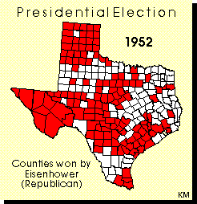
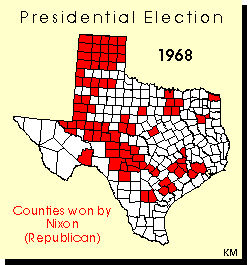
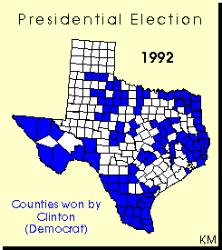
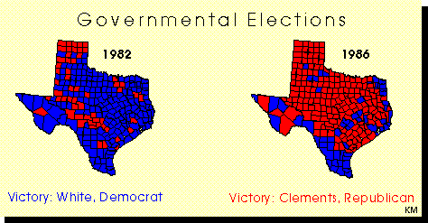
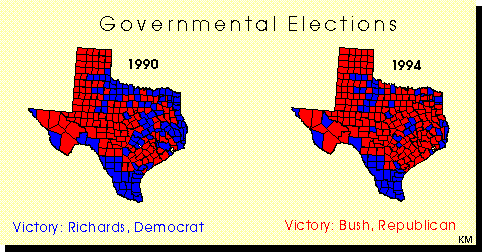
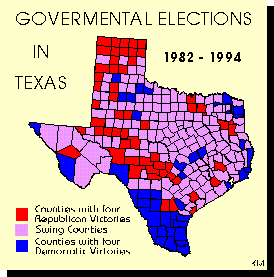
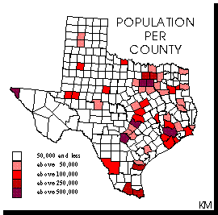
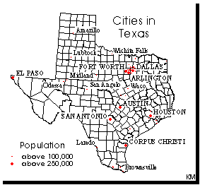

These materials were developed by Kenneth E. Foote and Katrin E. Molch, Department of Geography, University of Texas at Austin, 1995. These materials may be used for study, research, and education in not-for-profit applications. If you link to or cite these materials, please credit the authors, Kenneth E. Foote and Katrin E. Molch, The Geographer's Craft Project, Department of Geography, The University of Colorado at Boulder. These materials may not be copied to or issued from another Web server without the authors' express permission. Copyright © 1995. All commercial rights are reserved. If you have comments or suggestions, please contact the authors or Kenneth E. Foote at k.foote@colorado.edu .
The swing states were also divided (or prioritized) into sets keyed to the likelihood of a Democratic victory and the number electoral votes each of these states would yield. Three groups emerged: 1) states tending to favor Democratic candidates and with substantial electoral votes; 2) states tending to favor Democratic candidates but with relatively few electoral votes; and 3) states favoring Republican candidates and with substantial electoral votes. Most campaign attention was focused on sets 1 and 3, with those from set 2 worked in, as possible. In effect, the Democrats engaged in a sort of geographical and political "triage" to maximize their efforts.

The 1952 presidential race was perhaps the first signal of the coming changes. Texan Democrats found it very difficult to vote against the Republican candidate, the tremendously popular Dwight Eisenhower, the former general who led American forces to victory in World War II. Despite this Dixiecrat rebellion, most Texans remained in the fold of the Democratic Party. By the early 1960s major schisms had begun appear in the Texas Party. In November, 1963 President John Kennedy travelled to Texas with his Texan Vice-President Lyndon Johnson to try to resolve some of these tensions. The day of his assassination he was scheduled to spend the evening in Austin at Palmer Auditorium at a Democratic Party Rally much like the ones he had already held in San Antonio and Ft. Worth earlier in his trip, and like the one he was headed for in Dallas when his motorcade travelled through Dealey Plaza. The tensions were never resolved. Democratic Governor John Connelly who was wounded in Dallas would very soon "convert" to the Republican Party.

By 1968, significant numbers of Texas Democrats deserted their party to vote for Richard Nixon. Up to this time, Texans--no matter how conservative their political views--voted Democratic out of tradition, because the Republican "abolitionists" had defeated the South in the Civil War. In effect, Texas and the South were locked into voting patterns set at a time of crisis in 1860 .
During the intervening century, the Republican Party changed substantially (and Southern politicians began slowly to win back the tremendous influence they wielded before secession). By the 1950s and 1960s the Republicans had staked out political positions far closer to the views of many Texas Democrats. The result was a major realignment of party affiliation in Texas and throughout the entire South- -one of the greatest swings in American political life in the twentieth century. Now, for the first time in over a century, Texans are voting more closely in accord with their political beliefs than on the basis which party "won" the Civil War. In effect, Texas is rejoining the Union and becoming a two-party state after almost a century of one-party rule.

The transformation is not yet complete, but the 1992 presidential results provide a clear indication of how the patterns are changing. This transformation has resulted in tremendous unpredictability in the state's political life. Forecasting the outcome of races has become very difficult, particularly for the governor and the state's U.S. senators. The gradual change to Republicanism is sometimes thwarted by particularly popular politicians, the vagaries of the state's economy, and campaign mistakes. The two races between Mark White (Democrat) and Bill Clements (Republican) in 1982 and 1986 demonstrated how close the competition had become between the two parties--White beat Clements in 1982, but lost to Clements in 1986 after a downturn in the economy.

Ann Richard's 1990 victory over Clayton Williams was by a very narrow margin, a margin credited by some to mistakes and public gaffes Williams made late in the race. Richards then lost to George W. Bush in 1994 in another very close race.

At the moment, Texas has two Republican U.S. Senators--again a situation without precedent in the twentieth century. The situation at the local level also makes predictions difficult. Apart from a few counties, Democrats remain in firm control of most political offices. This leads to very confusing, but interesting politics.

There are many ways to define stronghold and swing counties. In this map stronghold counties are those that have been captured by Democrats and Republicans in all four of the last elections: 1982, 1986, 1990, 1994, and 1998. The remaining counties have "swung" between parties in one or more of these four elections. But stronghold counties could also be defined by the difference between the Democratic and Republican , or the total number of votes. The swing counties differ greatly in their "swinginess."
In examining these counties, you will probably need to consider several factors: 1) which swing counties have swung consistently toward the Republican Party (voted Republican in two out of the last three elections); 2) which swing counties have voted Republican in the most recent election; 3) the margin of the swing vote from election to election; and 4) which swing counties contain substantial numbers of voters.

This last factor is particularly important in Texas because the governor is elected by TOTAL POPULAR VOTE (not by an electoral college) and Texas' population is not evenly distributed. Swing counties with very few voters are not likely to repay the cost of campaigning since their votes can be easily offset by victory or defeat in larger urban counties.

Texas's population is concentrated in its cities. Your candidate MUST campaign in Harris, Dallas, Tarrant, Bexar, and Travis counties. Even if your candidate does not win all of these counties, the fruits of defeat will be huge numbers of votes that can compensate for weaknesses in other sparsely settled counties. A defeat in Harris county is still worth all the votes cast in West Texas. Given these considerations, provide your candidate with a list (and map) of at least two dozen counties where campaign attention is most likely to payoff in victory This list will almost certainly include major cities and the most populous counties, but what other counties can payback the effort of campaigning?
Once you have a sense of the demographic and electoral patterns expressed in the data, develop a plan of analysis that will lead to a defensible solution. Some of these techniques will be discussed in class. You will have to work extensively with both the geographic (shape) files (subsetting counties, creating new layers, copying counties from layer to layer) and the attribute files (adding new variables, creating special variables to code stronghold and swing counties).
Finally, you may discover that you need to add more information to your dataset to find the best solution to this problem. For example, you may wish to add the 1998 election returns or city populations to your spreadsheet since these fields are blank in the Texas files. Gather and add whatever information you feel is relevant to the solution.
Hammet, Jim. 1992. Computer mapping helped Clinton campaign target voters. Infoworld 14 (30 November): 12.
Montague, Claudia. 1993. Clinton follows computer maps to White House. American Demographis 15. (February): 13-15.
{kind=link}